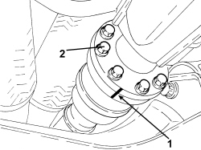
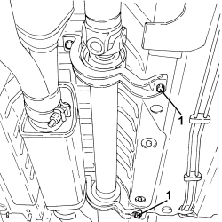
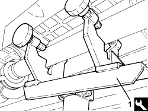
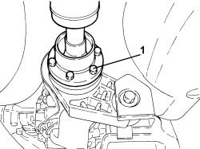
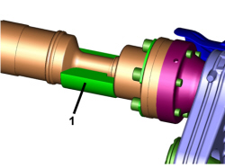
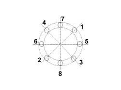
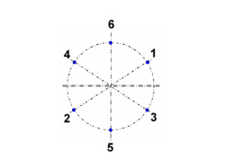

2410A18 TRANSMISSION WITH JOINTS INCLUDED - R.R.
- Path
- Procedures > 24 TRANSMISSION > 2410 TRANSMISSION SHAFT > TRANSMISSION SHAFT BETWEEN THE TRANSMISSION AND THE DIFFERENTIAL > 2410A18 TRANSMISSION WITH JOINTS INCLUDED - R.R.
- Kind
- repair procedure (removal / refitting; the operation number is the code)
- Applies to
- engines: 3.2 JTS; all production periods
- Interactive page
- https://sloeber94.github.io/elrnDB/alfa/159/en/#/939005305
Applies to: engines: 3.2 JTS; all production periods
 Removing
Removing
 Refitting
Refitting- Position the vehicle on a lift.
1. Undo the fastenings securing the catalyzer assembly to the mounting bracket.
2. Undo the bolts securing the catalyzer assembly mounting bracket to the bodyshell and remove it.
- Remove the gaskets.

Applies to: engines: 3.2 JTS; all production periods
1. Mark the position of the two flanges connecting the rear drive idler casing (PTU) to the propeller shaft.
2. Undo the bolts fixing the two flanges connecting the PTU to the propeller shaft.

Applies to: engines: 3.2 JTS; all production periods
1. Unscrew the bolts securing the intermediate supports to the propeller shaft.

Applies to: engines: 3.2 JTS; all production periods
1. Position a hydraulic jack complete with support tool in the centre area of the propeller shaft.
Tool | Description | Function | Validity |
|---|---|---|---|
1870602000 | Support | Propeller shaft mounting | 3.2 JTS |

Applies to: engines: 3.2 JTS; all production periods
- Mark the position of the two flanges connecting the rear differential (RDA) to the propeller shaft.
- Lower the hydraulic jack and remove the propeller shaft complete with joints.
- Keep any alignment spacers that may have been used for the propeller shaft intermediate supports.

Applies to: engines: 3.2 JTS; all production periods
Refitting
Removing- Place the propeller shaft in its housing using the hydraulic jack fitted with the support tool as described below.
- Firstly insert the front section of the shaft passing over the suspension crossmember and fitting into the PTU front constant velocity joint flange.
- Straighten the shaft and feed the rear constant velocity joint flange into the RDA one.
- Continue lifting until the shaft is straightened placing the brackets in contact with the bodyshell.
1. Fit the shaft alignment kit "spacer" by the rear joint.
Tool | Description | Function | Validity |
|---|---|---|---|
2000011700 | Propeller shaft alignment kit | Propeller shaft alignment angles check | 3.2 JTS |

Applies to: engines: 3.2 JTS; all production periods
- Align the reference marks, made during the removal, for the propeller shaft front constant velocity joint and the PTU flange.
- Align the reference marks, made during the removal, for the propeller shaft rear constant velocity joint and the RDA flange.
- Tighten the bolts fixing the front constant velocity joint to the PTU to a torque of 10% of the final value given below.
Component | Fastening | dia | Value (daNm) | Validity |
|---|---|---|---|---|
Propeller shaft - rear drive idler casing side | Bolt | M8 | 3.1 ÷ 3.7 | 3.2 JTS |
- The bolts should be tightened in a crossover sequence as illustrated.

Applies to: engines: 3.2 JTS; all production periods
- Tighten the bolts fixing the rear constant velocity joint to the RDA with half-moon washers in between to a torque of 10% of the final value given below.
Component | Fastening | dia | Value (daNm) | Validity |
|---|---|---|---|---|
Propeller shaft - rear differential side | Bolt | M10 | 5.6 ÷ 6.8 | 3.2 JTS |
- The bolts should be tightened in a crossover sequence as illustrated.

Applies to: engines: 3.2 JTS; all production periods
- Tighten the bolts fixing the propeller shaft intermediate supports to the bodyshell to a torque figure of 10% of the final value given below refitting any alignment spacers removed during the removal.
Component | Fastening | dia | Value (daNm) | Validity |
|---|---|---|---|---|
Bodyshell side propeller shaft intermediate support | Bolt | M8 | 2.2 ÷ 2.6 | 3.2 JTS |
- Tighten the bolts tightened previously securing the constant velocity joints and the propeller shaft intermediate supports to the final torque given below.
- Remove the hydraulic jack and support tool.
- Place the catalyzer assembly mounting bracket in position and secure it to the bodyshell by tightening the bolts to the recommended torque.
Component | Fastening | dia | Value (daNm) | Validity |
|---|---|---|---|---|
Catalyzer assembly to bodyshell mounting bracket | Bolt | M8 | 2.2 ÷ 2.7 | 3.2 JTS |
- Position the catalyzer assembly and secure it to the mounting bracket.
- Remove the vehicle from the lift.
Topics linked from this page (1)
Topics that link to this page (8)
- 1040A10 FUEL TANK - R + R AND DECANT FUEL
- 1040A14 FUEL TANK - R + R FOR REPLACEMENT
- 1040B30 FUEL SUPPLY PIPE (ONE) - R.R.
- 1040B52 FUEL RETURN PIPE (ONE) - R.R.
- 1080E61 FUEL VAPOUR PIPE FROM VAPOUR FILTER TO INTERMEDIATE COUPLING - R.R.
- 1080E43 PIPE FROM FUEL TANK TO ACTIVE CHARCOAL FILTER - R.R.
- 3340B67 RIGID PIPE FROM RIGHT REAR BRAKE CONNECTOR - R.R.
- 3340B69 RIGID PIPE FROM LEFT RER BRAKE CONNECTOR - R.R.